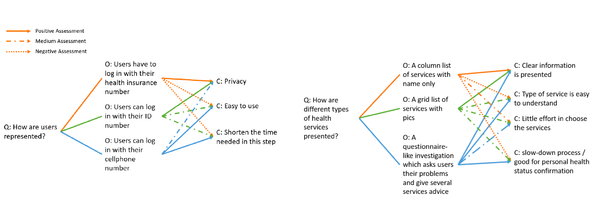

BRANDING //
TYPOGRAPHY //
COLOR PALETTE //
ICON SET //
INTERFACES //

PROCESS //
Problems
In my hometown, there has been an online website, EHealth, for 10 years, designed for keeping all citizens' health-related data inside. Medical staffs could refer to the data when diagnosing patients. Citizens could use it to view health records, suggestions and make appointments. Besides, public health department could easily find out the trend if an emergency disease comes like flu based on the database.
About 5 years ago, its mobile application was released. However, many people provided feedbacks that the app was not good to use, just simply copying things from web version.
Let’s take a look at why users feel the official app is difficult to use.

Notice that the last one showing form filling process is about pre-marital examination? Yes, my friend filled it with super patience and only felt that he should use ipad to fill it. Even from this case, I think I could come up with something that makes him even happier before his marriage and wedding ceremony!
What Users Want?
To have redesign base on solid foundation from very beginning, I got interviews with people who had experience with it before to better understand users needs.
It turned out that main expectations are:
- grouping related modules for them to find things easily
- allowing users interact without much difficulties in either performing task of understanding
- keeping interfaces in a warm and friendly visual style
Therefore, I decided that my design goal would be providing a more friendly, meeting-users-needs and easy-to-use mobile app targeting at general citizens (front-end users).
Comparative Analysis
Together with interviews, to understand how other products sharing similar or partial features design a good user flow and figure out more potential improving space, I conducted a comparative analysis including 8 healthcare products. Based on my analysis, I came up with several key insights for products that are user-friendly which are similar to results of user interviews.
- Arrange things well for users through information architecture and layouts
- Avoid using profound texts without explanation
- Make users feel cozy through language and visual expression

user dashboard page of MyUofMHealth
Information Architecture
In redesigning a new information architecture for the EHealth app, I tried to grouping related modules together, resetting hierarchy, and simplifying unnecessary information presenting.
an overview of info arch
Design Exploration
After determine overall app structure, I started to look into detailed process for each feature to prepare for design process.
Story mapping allows me to go through potential user process as listing out each step and possible actions as many as possible.
part of my story mapping about "make appointment" process
Design synthesis & denfense allowed me to have more intuitive comparison when deciding better way for a user task.
part of qoc/design synthesis & defense
Sketching
When brainstorming for layouts, I tried to explore some apps as resources which shared similar functions or worked as inspirations. Meanwhile, I asked for 2 people interviewed before remotely to help me check if certain layouts worked well.

early sketches
During this iteration phase, more details were found like one of my tester mentioned that many people around her thought that a link among family members would be helpful, like parents could get access to children's health data.
Wireframing
In wireframing phase, I tried to come up with main features that would be frequently used on mobile side without going deeply into details. Several rounds of layout iterations were conducted to find better way for users to interact with.
Design Anatomy
In my redesign, apart from grouping related sections together from information architecture step, I mainly focused on how to make it a mobile friendly one, which was actually the answer of problem: interact without difficultie.
form
1 column makes clear and larger space for each question. mobile friendly elements used for user behaviors.
button
different button styles demonstrate priority in calling users attention and are used as hints.
wording
more friendly texts used make it more like talking to someone
layout
card-style make it easier to identify item and provide a better space experience. text weight helps in hierarchy
line & block
less "single-line option" style, more block-look option for easier tapping
Visual Guides
Moving into visual design phase, my core idea was to create "safe, clean and warm" environments inside the tiny but strong app.
Color Palette & Typeface
In choosing color palettes, I selected blue as theme color with certain saturation which provided safety and softness for users. In my design, I included a feature that the system colors might be adjusted based on users’ health information. For instance, for users who have hemophilia, red color series may not be favored by them and therefore, the color of promotion or alert styles they receive may be less red and more orange.
For typeface choosing, supposing for English version only, I used Lato due to its simplicity and round curve which contributes to a warm and safe environment.
Icon Design

early sketches of icons
For icon design, I kept on the idea that creating a safe and warm interfaces for users. Therefore I avoided sharp corner and end point, with simple icons as well to decrease unnecessary information delivered to users compared to health info.
👈 Thanks for scrolling 👉